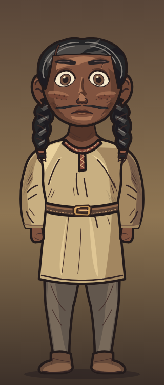
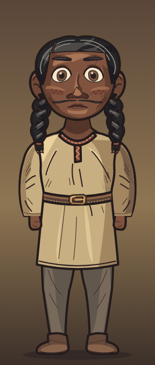
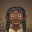

<!doctype html><html lang="ru"><meta charset="utf-8"><meta name="viewport" content="width=device-width,initial-scale=1"><title>Ширина основания носа</title><style>body{font:16px system-ui;background:#25201b;color:#eee2cd;margin:0 auto;max-width:1280px;padding:1rem}
    a{color:#f4ca91}h1,h2{font:700 1.7rem Georgia,serif}nav ul{columns:3}.grid{display:grid;gap:1rem;
    grid-template-columns:repeat(auto-fit,minmax(230px,1fr))}article{min-width:0;border:1px solid #655343;
    background:#312821;padding:.6rem;border-radius:5px}a img{vertical-align:middle}img{max-width:100%;height:auto}
    .character{display:block;max-height:460px;width:auto;margin:auto}.card{width:32px;height:32px}
    .detail{display:block;width:100%;margin:.35rem 0}.compare{display:flex;align-items:flex-start;gap:.5rem}
    .compare a{flex:1;min-width:0}small{color:#dccab0}code{overflow-wrap:anywhere}@media(max-width:730px){nav ul{columns:1}}</style><main><nav><a href="index.html">Все разделы</a></nav><h1>Ширина основания носа</h1><div class="grid"><article id="appearance__nose_width__medium"><h3>Среднее</h3><code>medium</code><a href="images/68dd9d51a27d67e69528ea3b195e4e9d6719c88a69cf84f201ef491579128dc5.png"></a><p><a href="images/9d40486d577596976c567599432ca7ae7691ae3974906ffb2cd6aef8e23abc97.png"></a> <small>32 × 32</small></p></article>
<article id="appearance__nose_width__narrow"><h3>Узкое</h3><code>narrow</code><a href="images/cc4756548d1197749b1f986d578c0cee19f7bd2284da050a9f91e0dd2cd4caba.png"></a><p><a href="images/1fdf773e2bae54f09f0b0ee1fd39dbe81ffd15ba4966aaa96b9cdaa8a2ccbeaa.png"></a> <small>32 × 32</small></p></article>
<article id="appearance__nose_width__wide"><h3>Широкое</h3><code>wide</code><a href="images/832726566b39994bfa1e396c925dd1ad265c8d4ec762275dee41d5f573b40c7d.png"></a><p><a href="images/4b7d5027ec07f54f1e1a57e3bdadb11affae2614e2231d86e3b3f6b732abb269.png"></a> <small>32 × 32</small></p></article></div></main></html>
